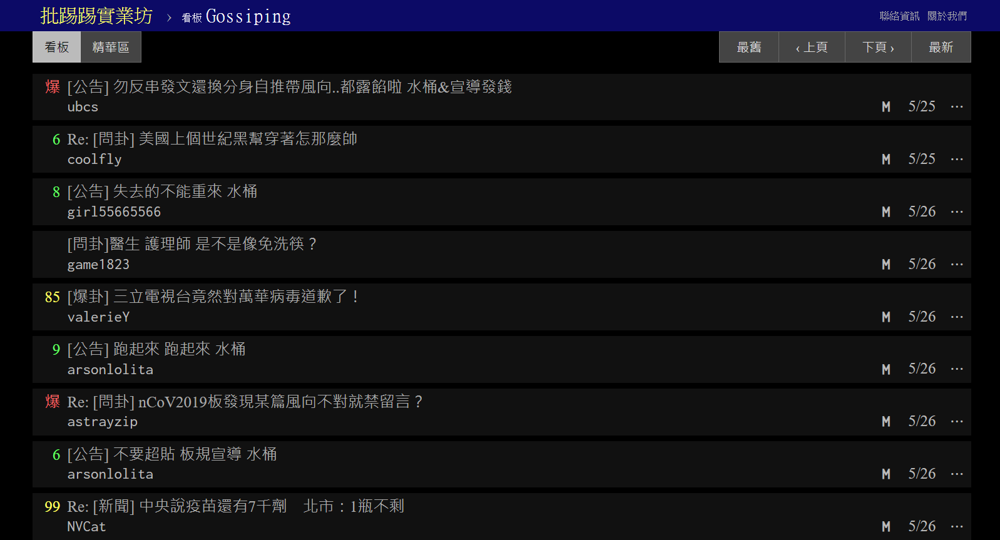
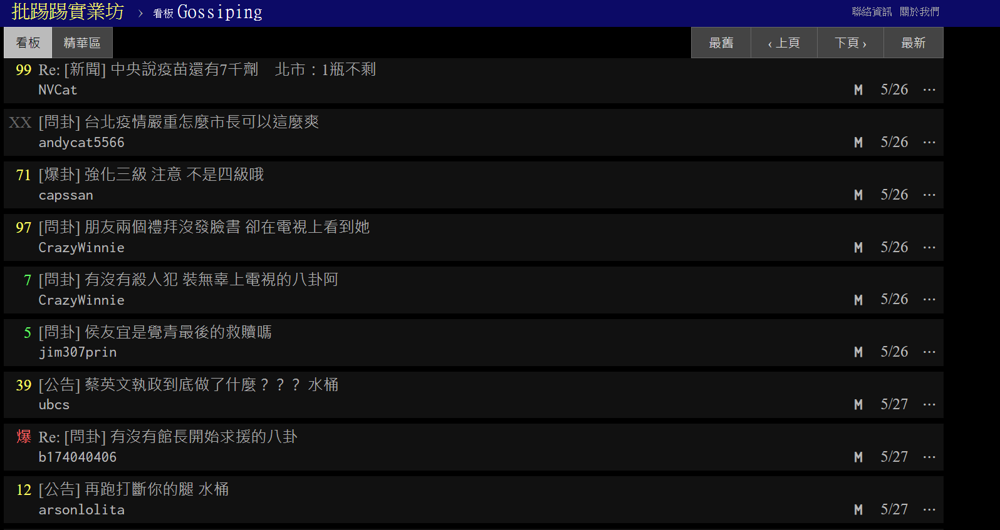

PTT網站機制與時間範圍
這次分析原是希望以臺灣第一次爆發大規模本土疫情的時間點(2021年5月)往後半年作為研究範圍，但後來以2022年Omicron變異株疫情的時間點(2022年6月)往後兩個月作為研究資料，原因如下所述的幾個限制：
- 文章刪除機制
- 文章類型
基本而言，PTT網站上的文章若非「發文者」本人或「版主」刪除，文章都會留在版面上。
然而，PTT網站仍有「文章超過看板容量上限，舊文章則會在PTT每週日上午五點重新開機後被系統自動清除且無法從資源回收桶救回。」的機制。
「PTT八卦版」每天都有大量的貼文數，十分容易超過看板容量的上限，因此幾年前的文章容易被系統自動刪除，所以在回溯到2021年的文章時發現文章數與現今的文章數有極大的差異，不適合做對照比較。

透過上述的圖片可以發現每篇文章標題後面都有一個「M」符號，這表示這篇文章被版主鎖起來，因為被認為是重要的、不該系統清除的，或者是不讓原ＰＯ刪除的標記。